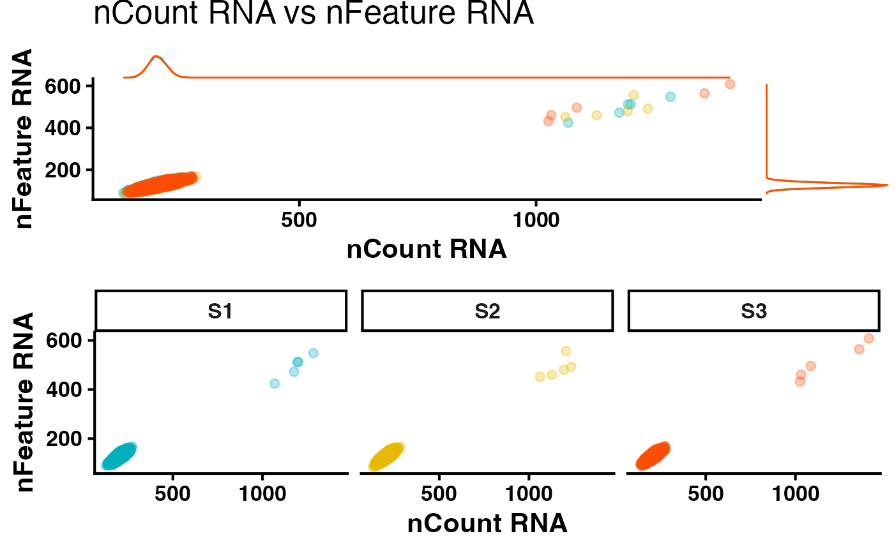

building-data-and-QC
building-data-and-QC.RmdIntroduction
This vignette demonstrates how to generate Seurat objects for
multiple samples at once from the cellRanger output files
using GDSCtools, as well as some basic quality control
functionality.
The workflow includes:
- Reading in 10x GEX experiments into Seurat objects
- Generate a cohesive metadata table across multiple samples for downstream QC
- Generating QC metric scatter plots
First, designate a folder where you will store any outputs. This can be whatever or wherever you choose.
library(GDSCtools)
#>
library(Seurat)
#> Attaching SeuratObject
library(Matrix)
library(purrr)
#----- Set a directory to hold outputs
outputDir <- c("/Users/mike/Desktop/")Let’s simulate some single cell with data for the purposes of this vignette.
set.seed(42)
simulate_seurat_object <- function(n_cells, sample_name) {
# Simulate sparse count matrix
expr <- rpois(n = 2000 * n_cells, lambda = 1)
expr[sample(length(expr), size = length(expr) * 0.9)] <- 0 # Sparsify
mat <- Matrix::Matrix(data = expr, nrow = 2000, ncol = n_cells, sparse = TRUE)
rownames(mat) <- paste0("Gene", 1:2000)
colnames(mat) <- paste0(sample_name, "_cell", 1:n_cells)
# Create Seurat object
seu <- CreateSeuratObject(counts = mat, project = sample_name)
# Simulate QC metadata
seu$nFeature_RNA <- Matrix::colSums(mat > 0)
seu$nCount_RNA <- Matrix::colSums(mat)
seu$percent.mt <- rnorm(n_cells, mean = 5, sd = 2)
# Inject outliers (5 random cells)
outlier_cells <- sample(colnames(seu), size = 5)
seu$nFeature_RNA[outlier_cells] <- seu$nFeature_RNA[outlier_cells] * 4
seu$nCount_RNA[outlier_cells] <- seu$nCount_RNA[outlier_cells] * 6
seu$percent.mt[outlier_cells] <- seu$percent.mt[outlier_cells] + 20
return(seu)
}
# Create 3 dummy datasets
dummySamples <- list(
S1 = simulate_seurat_object(n_cells = 9234, sample_name = "S1"),
S2 = simulate_seurat_object(n_cells = 6763, sample_name = "S2"),
S3 = simulate_seurat_object(n_cells = 7996, sample_name = "S3")
)To generate a metadata table we can use for downstream QC analysis, we can merge the metadata.
metadata <- mergeMetadata(dummySamples)
colnames(metadata)
#> [1] "orig.ident" "nCount_RNA" "nFeature_RNA" "percent.mt" "cell_id"
#----- Get a vector of unique samples
samples <- unique(metadata$orig.ident)
colors <- c("#00AFBB", "#E7B800", "#FC4E07")Generating a QC scatter plot is a good way to begin to assess your data quality.
#----- Create a scatter plot
qcScatter(metadata = metadata,
Xvar = "nCount_RNA",
Yvar = "nFeature_RNA",
logTransformX = FALSE,
logTransformY = FALSE,
colors = colors,
width = 8,
height = 8)